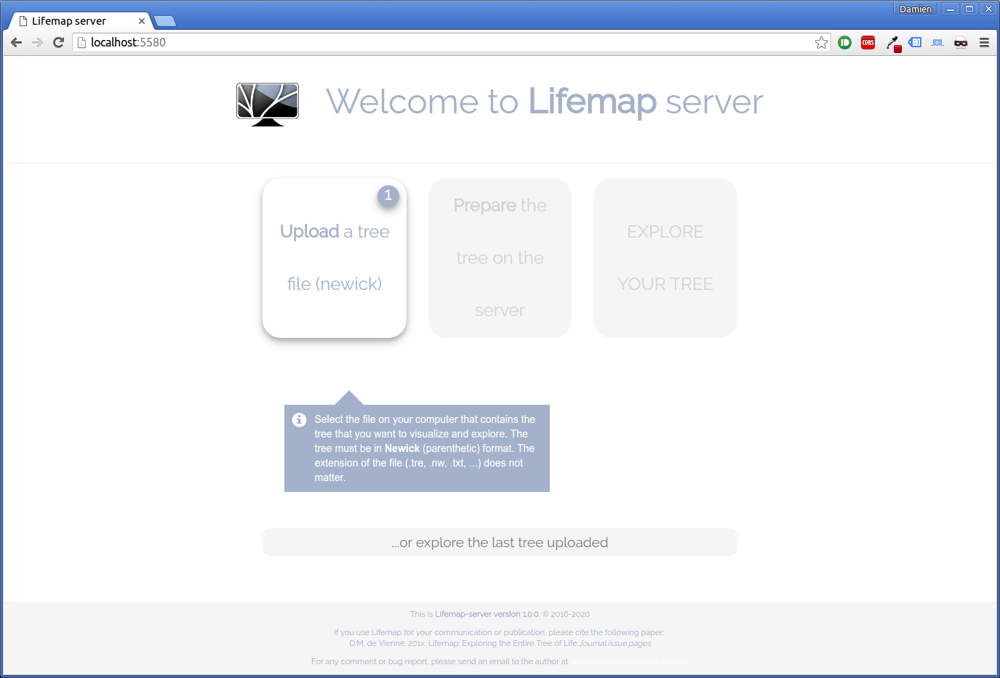

Installing and using Lifemap Virtual Machine
Using Lifemap Virtual Machine is very easy. Follow the instructions given here:
1. Download Lifemap-server Virtual Machine
Go to http://lifemap.univ-lyon1.fr/download.html and download the file. Warning, this file is big (3.6Go). It contains the whole virtual machine (ova format).
2. Install Virtualbox
VirtualBox is an opensource virtualization tool that can open and run virtual machines. Go to https://www.virtualbox.org/ and follow the instructions to downaload and install Virtualbox.
Note: if you already have a virtualization tool installed (Virtualbox, VMware, etc.) there is no need to install a new one. Just use it.
3. Start Lifemap-server Virtual Machine with the virtualization tool
Start VirualBox.
Go to File->Import Virtual Disk.
Follow the instructions to import the ova file you just downloaded.
Once everything is done, just click on the virtual machine and click Start. This will start Lifemap-server.
4. Use Lifemap-server
Open your browser, and type localhost:5580. You should see a page that looks like this one:

Simply follow the instructions to view your tree.
5. Additional information
- You need to empty the cache of your browser every time you uplaod a new tree to the server. If you don't, you may be exploring a tree that is not the last one uploaded.
- Lifemap-server is configured to view trees with a maximum of 42 zoom levels (in Google maps, you use 18 zoom levels!).
- For very large trees (million tips), Lifemap-server can be slow if you keep the default configuration of the virtual machine. Depending on the ressources you have on your machine that hosts the virtualmachine, you may want to increase the memory that is allowed to the VM and the number of CPUs that it can use. By default the VM uses 2 CPUs and 2G of RAM.